I build deep-learning systems for vision and language, in research and in industry. I'm currently a research intern at Valeo.ai, working on vision-language models for self-driving cars, and a master's student in computer vision at Sorbonne Université and Télécom Paris. I'm looking for a PhD or a research-oriented role in deep learning.
Product Label Extractor: photos to multilingual product data
An online shop selling imported products had to publish the legal label information of every item (ingredients, allergens, nutrition, storage, responsible operator) in the customer's language, and the only source was the physical package. This tool turns that into: take a few photos, review, export.
A small vision model reads each photo, a text model turns the transcription into validated structured fields and translates them into the languages you pick (seven EU languages), and unit conversions run in plain code instead of the prompt. Products accumulate in an editable catalog and are exported as a Shopify import file. Everything runs locally on a laptop CPU with open models through Ollama, or with the OpenAI API by changing one setting.
The app. Two products are extracted, one mistranslation is fixed by hand, and the catalog is exported for Shopify.
At every planning step, a driving planner proposes dozens of candidate trajectories and a scorer picks the safest one. I'm adding language to that loop: an open-source vision-language model describes what the front camera sees, in words, and the scorer attends to that description when it ranks the trajectories.
The question is whether words help a car drive better, especially in rare situations like a child running into the road, dense fog or an unusual obstacle. I test it closed-loop in the CARLA driving simulator, where the car's own decisions change what happens next, and fine-tune the models at scale on HPC clusters.
Cameras + car state
images, speed, route
Proposer
dozens of candidate trajectories
Scorer
safety, progress, comfort
Chosen trajectory
sent to the controller
new
Front camera
one frame per step
Vision-language model
open-source
Scene description
"A pedestrian runs in front."
↳ goes into the scorer
Where language enters the planner. The description becomes tokens the scorer can attend to, next to the camera features.
Candidates. The chosen one is green.
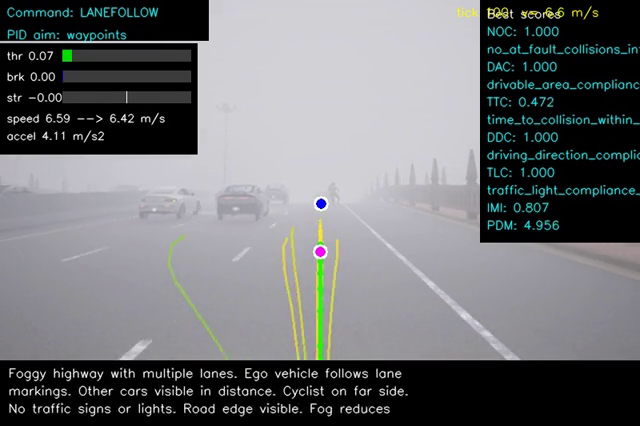
Fog. The description still picks out a distant cyclist.
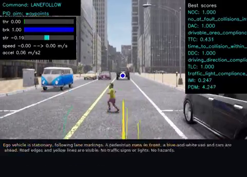
Rare hazard. Highlighted: the words the scorer attended to most.
Does an off-the-shelf VLM understand a driving scene?
Vision-language modelAlways give the most common answer
Show the numbers as a table
Question
Model
Baseline
True "yes"
Model "yes"
Checking the words before trusting them. Yes/no questions on about 620 simulator frames. The model is useful for intersections and weather, but says "highway", "night" and "parking" far too often.
Closed-loop, not only offline
Every change is tested by letting the car drive whole routes, because mistakes compound in ways recorded data hides.
Seeing is not acting
Attention analysis shows which words the scorer reads, which separates noticing a hazard from acting on it.
Train at 256 px, predict at 1024 px: resolution-robust segmentation
Kidney biopsy slides are enormous, so models are usually trained on downsampled tiles. A convolutional network learns filters with a fixed size in pixels, so what it learns at 256 px does not carry over to the native 1024 px. Neural operators learn in the frequency domain, which should make them independent of resolution.
I tested that claim: every model is trained at 256 px and evaluated at 128, 256, 512 and 1024 px, comparing U-Nets from 0.5 to 31 million parameters with neural operators.
0.72Dice
neural operator at 1024 px, 4× the training resolution
≤ 0.08Dice
every U-Net at 1024 px, from 0.49 M to 31 M parameters
658k
parameters in the neural operator, 47× fewer than the largest U-Net
1024 pxnative
512 px
256 pxtraining
128 px
Ground truth
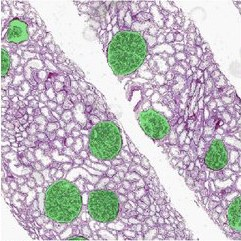
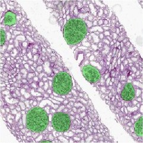
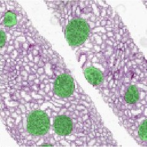
U-Net31 M params
0.03
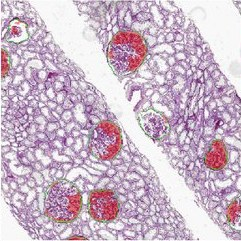
0.62
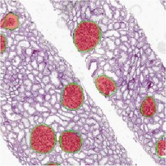
0.93
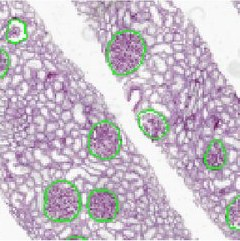
0.00
Neural operatorHNOSeg-XS, 658 k
0.76
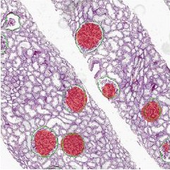
0.75
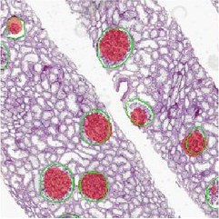
0.74
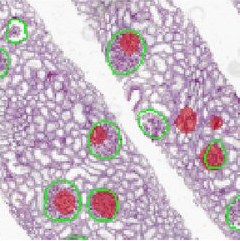
0.41
ground truthpredictiontraining resolution
One validation tile at four resolutions, with the Dice score on that tile.
Neural operator (0.66 M)U-Nets, four sizes (0.49 M – 31 M)
Show the numbers as a table
Model
128 px
256 px
512 px
1024 px
Dice by test resolution, all models trained at 256 px, on 63 validation tiles from 3 unseen slides.
Transfer is the operator's strength
At 256 px small U-Nets still win (0.88–0.90 vs about 0.74). The operator's advantage is keeping its accuracy when the resolution changes.
Tile edges matter
Glomeruli cut by the tile edge are found less often. Mirror padding at prediction time, with no retraining, removes the wrap-around artefacts.
More capacity can hurt transfer
More frequency modes, a U-shaped operator or attention tended to help at 256 px and hurt at 1024 px.
Next
Training on several resolutions at once, several seeds, and a held-out test set.
Each layer is a symmetric matrix stored through its eigendecomposition, W = QΛQᵀ. A sparsity penalty on the eigenvalues pushes most of them to zero during training, so afterwards the layer can be cut to a much lower rank.
I first designed it in PyTorch and JAX/Flax. Results so far are mixed: EigenNet is on par with compressing a trained network by SVD, a little ahead at moderate compression and behind at the smallest sizes. I'm re-running the experiments against stronger baselines.
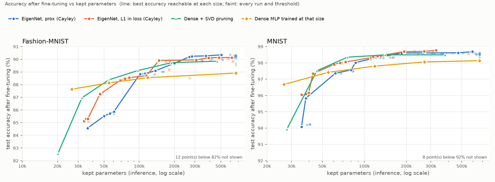
Accuracy after pruning against parameters kept.
Model compressionLow-rank layersPyTorchJAX / Flax
Robots that evolve their behaviour together
We implemented mEDEA, a decentralized evolutionary algorithm, on a swarm of small Pogobot robots. Each robot runs a tiny neural-network controller and passes its "genome" to neighbours over infrared; controllers that do well in the environment spread through the swarm, with no central computer.
It runs in the Pogosim simulator and on real robots. I extended the simulator with an orbiting light source to test moving targets.
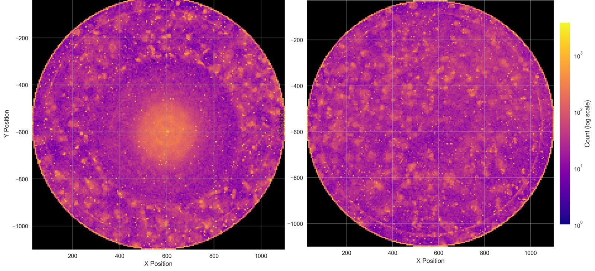
Where the robots spent their time over 30 runs of 30 minutes. With a light at the centre (left) the swarm gathers around it; without one (right) it stays spread out.
Built and fine-tuned LLM agents that answer analytics questions and customer-support requests by retrieving from company data (retrieval-augmented generation), deployed on AWS.
LLM agentsRAGLangChainFine-tuningAWS
LLM tools for an online shop
Built LLM-based tools connected to the shop's Shopify store: price suggestions, inventory management, and automatic translation of product labels.
LLM toolsShopifyTranslationPricing
Live analytics on supercomputers
Benchmarked and deployed a tool that connects MPI-based simulations to Dask, so their data can be analysed while they run on HPC clusters.
HPCMPIDaskBenchmarking
Similarity search for geological data
Used metric learning and semi-supervised deep learning to build a similarity model for multivariate geological time series, used in deep-water oil exploration. I also taught deep learning for geological data as a teaching assistant.
Autonomous map discovery and navigation with an iRobot Create3 robot, using ROS 2 and the Gazebo simulator.
ROS 2GazeboNavigationMapping
Dynamic pricing with reinforcement learning
Developed a dynamic-pricing product for Burger King stores in Brazil, using reinforcement learning.
Reinforcement learningPandasscikit-learn
Finding misinformation websites by following who shares them
Much of the fake news online comes from websites that exist to publish it, and new ones keep appearing. Instead of checking sites one by one, the method follows the people who share fake news: the sites they link to are good candidates for the next misinformation website.
I developed the method and its crawling and ranking pipeline, and we ran it on Twitter from Brazilian and US starting points, comparing it with starting points that were not fake news.
Seeda confirmed fake-news link
Sharersusers who posted it
Timelineseverything else they shared
Ranklinked sites, by how many of these users share them, how often, and popularity
Checkthe top site, by hand or against fact-checking lists
↺ A confirmed site becomes the next seed, so each cycle widens the search.
The discovery loop.
Leandro Araújo, Luiz Felipe Nery, Isadora C. Rodrigues, João M. M. Couto, Júlio C. S. Reis, Ana P. Silva, Jussara M. Almeida, Fabrício Benevenuto. Identifying Brazilian Misinformation Websites. Brazilian Symposium on Databases (SBBD), 2022.
Do toxicity and sentiment models penalise African American English?
Platforms use toxicity and sentiment models to moderate content automatically. We measured whether these tools treat African American English (AAE) fairly, by scoring speech with and without AAE expressions while controlling for what is being said.
We used four datasets: subtitles of YouTube movie reviews, a Twitter corpus, and two spoken-English corpora (CORAAL for AAE, Buckeye for comparison). Across most models and settings, heavy use of AAE expressions made a speaker look substantially more toxic, even when talking about nearly the same subject.
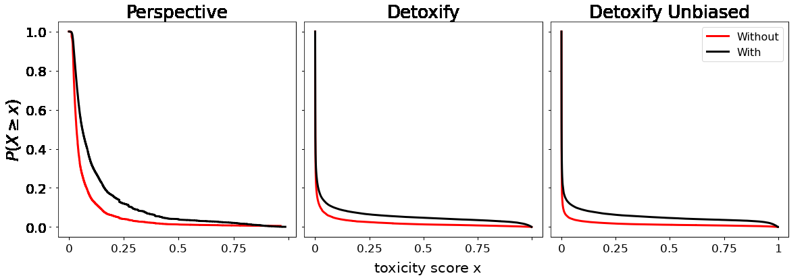
Spoken English (CORAAL and Buckeye). Each curve is the share of utterances with a toxicity score of at least x. Black: utterances containing African American English expressions. Red: utterances without them.
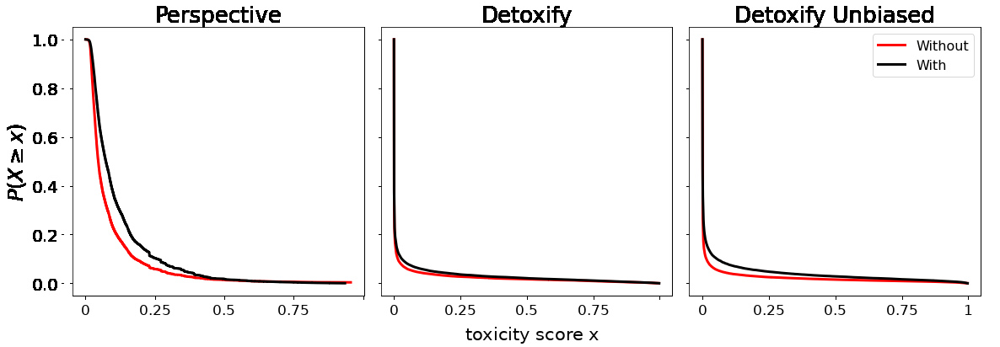
YouTube movie reviews. The black curve sits above the red one again, most clearly for Perspective: speech with AAE expressions is rated toxic more often. These are raw score distributions; the paper also tests the effect with regression models that account for other features of the text.
Guilherme H. Resende, Luiz F. Nery, Fabrício Benevenuto, Savvas Zannettou, Flavio Figueiredo. A Comprehensive View of the Biases of Toxicity and Sentiment Analysis Methods Towards Utterances with African American English Expressions. Brazilian Symposium on Multimedia and the Web (WebMedia), 2024.